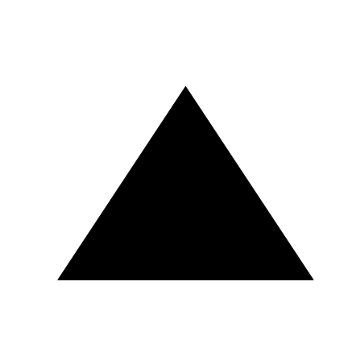
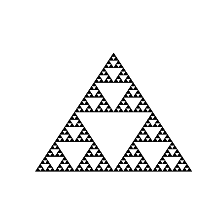
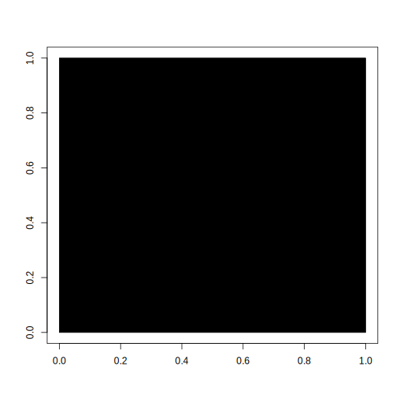
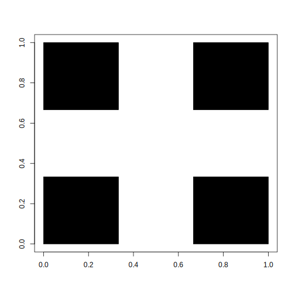
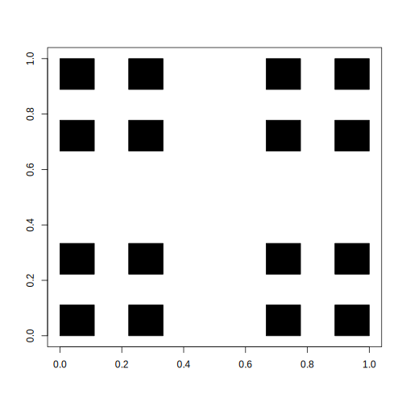
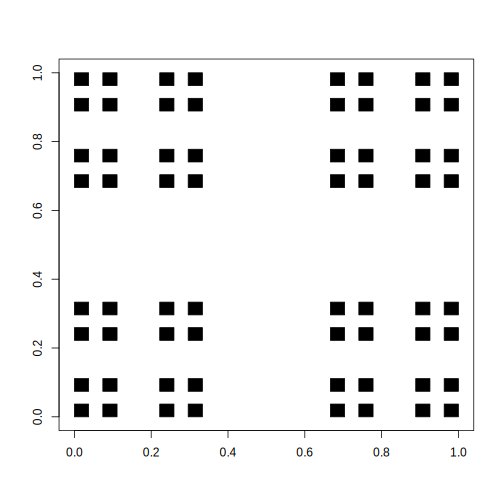
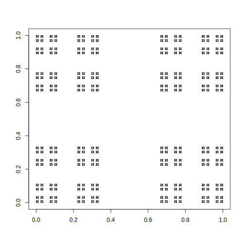

Rozdział 5 Zalaczniki
5.1 Przykłady w Julia
using Plots
function trojkat(x, y, bok)
return [(x+bok*0,y+bok*0),(x+bok*1,y+bok*0),(x+bok*1/2,y+bok*sqrt(2)/2),(x+bok*0,y+bok*0)]
end
# czyścimy ekran
E = 0.05
Plots.plot(0,xlim=(0-E,1+E),ylim=(0-E,1+E-0.1))
function rysuj_uszczelke(x, y, szerokosc, iteracja)
if iteracja == 0
Plots.plot!(trojkat(x, y, szerokosc), seriestype=:shape, color=:black, legend=:false)
else
rysuj_uszczelke(x, y, szerokosc / 2, iteracja - 1)
rysuj_uszczelke(x+szerokosc / 2, y, szerokosc / 2, iteracja - 1)
rysuj_uszczelke(x+szerokosc / 4, y+sqrt(3)*szerokosc/4, szerokosc / 2, iteracja - 1)
end
current()
end
rysuj_uszczelke(0, 0, 1, 5)
using Plots
# czyścimy ekran
E = 0.05
Plots.plot(0,xlim=(0-E,1+E),ylim=(0-E,1+E-0.1))
function rysuj_uszczelke(x, y, szerokosc, iteracja)
if iteracja == 0
Plots.scatter!([x], [y], markerstrokecolor=:white, markersize=3, color=:black, legend=:false)
else
rysuj_uszczelke(x, y, szerokosc/2, iteracja - 1)
rysuj_uszczelke(x+szerokosc/2, y, szerokosc/2, iteracja - 1)
rysuj_uszczelke(x+szerokosc/4, y+sqrt(3)*szerokosc/4, szerokosc/2, iteracja - 1)
end
current()
end
rysuj_uszczelke(0, 0, 1, 8)
5.2 Przykłady w R
W programie R nie ma funkcji rysującej trójkąty, więc musimy ją najpierw zdefiniować. Do tego celu używamy funkcji polygon, która rysuje wypełnione zamknięte wielokąty. Na jej bazie definiujemy funkcje trojkat rysującą trójkąt równoboczny o boku bok zaczepiony lewym dolnym rogiem w punkcie (x, y).
trojkat <- function(x, y, bok) {
polygon(x + bok*c(0, 1, 1/2),
y + bok*c(0, 0, sqrt(3)/2),
col = "black")
}Przetestujmy tę funkcję. Najpierw funkcją plot.new otworzymy nowy obszar do rysowania o wymiarach 1x1 a następnie narysujemy trójkąt o boku 1.
plot.new()
trojkat(0, 0, 1)
Jeżeli chcielibyśmy narysować drugi krok konstrukcji trójkąta Sierpińskiego to musielibyśmy wywołać funkcję trojkat trzy razy.
plot.new()
trojkat(0, 0, 0.5)
trojkat(0.5, 0, 0.5)
trojkat(0.25, sqrt(3)/4, 0.5)Aby narysować trzeci krok należałoby wywołać tę funkcję \(3^2\) razy.
plot.new()
trojkat(0, 0, 0.25)
trojkat(0.25, 0, 0.25)
trojkat(0.125,sqrt(3)/8, 0.25)
trojkat(0.5, 0, 0.25)
trojkat(0.75, 0, 0.25)
trojkat(0.625, sqrt(3)/8, 0.25)
trojkat(0.25, sqrt(3)/4, 0.25)
trojkat(0.50, sqrt(3)/4, 0.25)
trojkat(0.375,3*sqrt(3)/8, 0.25)
Rysowanie kolejnych kroków kopiując linijki z funkcją trojkat byłoby niepraktyczne. Znacznie lepiej wykorzystać rekurencje. Poniżej tworzymy funkcje fraktal_trojkat, która w kroku 0 rysuje w trójkąt o zadanym boku a w innych krokach wywoluje się z poleceniem narysowani trzech miejszych fraktali o boku będącym połową wyjściowego.
fraktal_trojkat <- function(x, y, bok, krok = 0) {
if (krok == 0) {
trojkat(x, y, bok)
} else {
fraktal_trojkat(x, y, bok/2, krok - 1)
fraktal_trojkat(x+bok/2, y, bok/2, krok - 1)
fraktal_trojkat(x+bok/4, y+sqrt(3)*bok/4, bok/2, krok - 1)
}
}Wypróbujmy ją!
Może na początek ustawmy 5 iteracji, przez co narysujemy \(3^5 = 243\) trójkątów.
plot.new()
fraktal_trojkat(0, 0, bok = 1, krok = 5)
Bardzo bardzo mały trójkąt wygląda jak punkt
Zamiast rysować trójkąt wystarczy narysować jeden punkt, bo trójkąty po pewnym czasie i tak są strasznie małe.
Tyle, że trójkąt Sierpińskiego składająca się z \(243\) punktów jest dosyć dziurawa. Dlatego sprawdzimy jak wygląda dla 8 iteracji.
plot.new()
fraktal_punkt <- function(x, y, bok, krok = 0) {
if (krok == 0) {
points(x, y, pch=".", col="black")
} else {
fraktal_punkt(x, y, bok/2, krok - 1)
fraktal_punkt(x+bok/2, y, bok/2, krok - 1)
fraktal_punkt(x+bok/4, y+sqrt(3)*bok/4, bok/2, krok - 1)
}
}
fraktal_punkt(0, 0, bok = 1, krok = 8)Ile punktów narysowaliśmy?
5.2.1 Dywan Sierpińskiego w R
Prace z fraktalami rozpoczniemy od utkania Dywanu Sierpińskiego. Zaczniemy od jego zubożonej wersji, którą trochę łatwiej opisać na początku, a później pokażemy przepis na kompletny dywan.
Jest to dobry fraktal na początek, wystarczy:
- narysować kwadrat
- pomniejszyć rysunek 3 razy
- skopiować 4 razy w cztery rogi kwadratu
- z otrzymanym rysunkiem wrócić do kroku 2
i tak w nieskończoność.
Pierwsze trzy iteracje powyższego schematu przedstawione są na rysunku poniżej.

images/fraktale_01.png
Ok, spróbujmy to zrobić w R.
5.2.1.1 Narysuj mi kwadrat
Zacznijmy od narysowania kwadratu.
Pierwsza linijka poniższego przykładu tworzy pusty obszar do rysowania o wymiarach [0,1]x[0,1].
Druga linijka zawiera instrukcje rect(), która rysuje czarny kwadrat rozpięty od punktu (0,0) do (1,1).
# czyścimy ekran
plot(0, xlim = c(0,1), ylim = c(0,1), xlab="", ylab="", col="white")
rect(0, 0, 1, 1, col = "black")
W drugiej iteracji ten kwadrat jest trzykrotnie pomniejszany do wymiarów 1/3 x 1/3 i rysowany w czterech rogach. Mamy do narysowania cztery kwadraty i możemy to zrobić w poniższy sposób.
# czyścimy ekran
plot(0, xlim = c(0,1), ylim = c(0,1), xlab="", ylab="", col="white")
rect(0, 0, 1/3, 1/3, col = "black")
rect(0+2/3, 0, 1/3+2/3, 1/3, col = "black")
rect(0, 0+2/3, 1/3, 1/3+2/3, col = "black")
rect(0+2/3, 0+2/3, 1/3+2/3, 1/3+2/3, col = "black")
W trzeciej iteracji w miejsce każdego z tych czterech kwadratów rysujemy kolejne 4 kwadraty trzykrotnie pomniejszone.
W sumie będzie to 16 kwadratów, sporo ale jeszcze damy radę to zapisać.
Można to zrobić tak
# czyścimy ekran
plot(0, xlim = c(0,1), ylim = c(0,1), xlab="", ylab="", col="white")
rect(0, 0, 1/9, 1/9, col = "black")
rect(0+2/9, 0, 1/9+2/9, 1/9, col = "black")
rect(0, 0+2/9, 1/9, 1/9+2/9, col = "black")
rect(0+2/9, 0+2/9, 1/9+2/9, 1/9+2/9, col = "black")
rect(0+2/3, 0, 1/9+2/3, 1/9, col = "black")
rect(0+2/3+2/9, 0, 1/9+2/3+2/9, 1/9, col = "black")
rect(0+2/3, 0+2/9, 1/9+2/3, 1/9+2/9, col = "black")
rect(0+2/3+2/9, 0+2/9, 1/9+2/3+2/9, 1/9+2/9, col = "black")
rect(0, 0+2/3, 1/9, 1/9+2/3, col = "black")
rect(0+2/9, 0+2/3, 1/9+2/9, 1/9+2/3, col = "black")
rect(0, 0+2/3+2/9, 1/9, 1/9+2/3+2/9, col = "black")
rect(0+2/9, 0+2/3+2/9, 1/9+2/9, 1/9+2/3+2/9, col = "black")
rect(0+2/3, 0+2/3, 1/9+2/3, 1/9+2/3, col = "black")
rect(0+2/3+2/9, 0+2/3, 1/9+2/3+2/9, 1/9+2/3, col = "black")
rect(0+2/3, 0+2/3+2/9, 1/9+2/3, 1/9+2/3+2/9, col = "black")
rect(0+2/3+2/9, 0+2/3+2/9, 1/9+2/3+2/9, 1/9+2/3+2/9, col = "black")
Aby narysować dywan sierpińskiego musimy tę procedurę powtórzyć przynajmniej kilka razy, co wymaga narysowania tysięcy, a często jeszcze większej liczby, kwadratów.
Przy takiej liczbie kwadratów kopiowanie kolejnych linijek z wywołaniem funkcji rect nie ma sensu.
5.2.1.2 Rekurencja
Zrobimy to sprytniej używając rekurencji, czyli funkcji, która sama siebie wywołuje.
Skorzystamy z cechy, która nazywa się samopodobieństwem, czyli cały dywan jest podobny do swoich części.
Poniższy przykład przedstawia bardzo sprytną funkcję rysuj_dywan(). Ma ona kilka ciekawych argumentów. Pierwsze dwa x i y wskazują w którym miejscu ma być rysowany dywan, trzeci szerokosc określa szerokość rysowanego dywanu, a ostatni iteracja określa ile iteracji powyższego algorytmu powinniśmy wykonać by narysować dywan.
Jeżeli funkcja rysuj_dywan() zostanie wywołana z argumentem iteracja = 0 to narysuje sam kwadrat. Ale jeżeli zostanie wykonana z innym argumentem to narysuje cztery dywany zaczepione w rogach kwadratu o szerokości \(1/3\) wyjściowego dywanu.
Zobaczmy co z tego wyjdzie!
# czyścimy ekran
plot(0, xlim = c(0,1), ylim = c(0,1), xlab="", ylab="", col="white")
rysuj_dywan <- function(x, y, szerokosc, iteracja = 0) {
if (iteracja == 0) {
rect(x, y, x + szerokosc, y + szerokosc, col = "black")
} else {
rysuj_dywan(x, y, szerokosc/3, iteracja - 1)
rysuj_dywan(x+szerokosc*2/3, y, szerokosc/3, iteracja - 1)
rysuj_dywan(x, y+szerokosc*2/3, szerokosc/3, iteracja - 1)
rysuj_dywan(x+szerokosc*2/3, y+szerokosc*2/3, szerokosc/3, iteracja - 1)
}
}
rysuj_dywan(0, 0, szerokosc = 1, iteracja = 2)Możemy teraz w prosty sposób narysować kolejne iteracje małym nakładem kodu.
Na trzecim poziomie będzie to \(4^3 = 64\) kwadratów.
# czyścimy ekran
plot(0, xlim = c(0,1), ylim = c(0,1), xlab="", ylab="", col="white")
rysuj_dywan(0, 0, szerokosc = 1, iteracja = 3)
Zobaczmy jak będzie ta figura wyglądała dla piątej iteracji. Mamy już do czynienia z \(4^5 = 2^10 = 1024\) kwadratami.
# czyścimy ekran
plot(0, xlim = c(0,1), ylim = c(0,1), xlab="", ylab="", col="white")
rysuj_dywan(0, 0, szerokosc = 1, iteracja = 5)
5.2.1.3 Prawdziwy dywan
Widzimy już jak działa rekurencja oraz co się dzieje w kolejnych iteracjach. Jesteśmy gotowi do narysowania pełnego dywanu Sierpińskiego.
Różnica jest taka, że w każdym kroku, zamiast czterech kwadratów w rogach, będziemy rysować 8 kwadratów ,,po obwodzie’’ dużego kwadratu.
W poniższej funkcji w każdym kroku z iteracja różnym od 0, rysujemy 8 mniejszych dywanów.
rysuj_dywan <- function(x, y, szerokosc, iteracja = 0) {
if (iteracja == 0) {
rect(x, y, x + szerokosc, y + szerokosc, col = "black")
} else {
rysuj_dywan(x, y, szerokosc/3, iteracja - 1)
rysuj_dywan(x+szerokosc*1/3, y, szerokosc/3, iteracja - 1)
rysuj_dywan(x+szerokosc*2/3, y, szerokosc/3, iteracja - 1)
rysuj_dywan(x, y+szerokosc*1/3, szerokosc/3, iteracja - 1)
rysuj_dywan(x+szerokosc*2/3, y+szerokosc*1/3, szerokosc/3, iteracja - 1)
rysuj_dywan(x, y+szerokosc*2/3, szerokosc/3, iteracja - 1)
rysuj_dywan(x+szerokosc*1/3, y+szerokosc*2/3, szerokosc/3, iteracja - 1)
rysuj_dywan(x+szerokosc*2/3, y+szerokosc*2/3, szerokosc/3, iteracja - 1)
}
}Rysowanie dywanu dla pięciu iteracji może trochę trwać, ponieważ składa się z \(8^5 = 2^15 = 32768\) kwadratów.
Ale warto chwilę poczekać by uzyskać taki wynik.
# czyścimy ekran
plot(0, xlim = c(0,1), ylim = c(0,1), xlab="", ylab="", col="white")
rysuj_dywan(0, 0, szerokosc = 1, iteracja = 5)
Oczywiście możemy zwiększać liczbę iteracji, ale zmiany na obrazku przestają być zauważalne.
5.2.1.4 Bardzo bardzo mały kwadrat wygląda jak punkt
Zauważmy, że narysowany kwadrat bardzo szybko maleje. Maleje wręcz z wykładniczą prędkością. Więc po wielu iteracjach nie musimy rysować kwadratu, wystarczy, że narysujemy punkt, mniej zachodu.
Sprawdźmy czy tak faktycznie jest. Zmienimy funkcję rysuj_dywan() by w finalnej iteracji rysowała punkt.
# czyścimy ekran
plot(0, xlim = c(0,1), ylim = c(0,1), xlab="", ylab="", col="white")
rysuj_dywan <- function(x, y, szerokosc, iteracja = 0) {
if (iteracja == 0) {
points(x, y, col = "black", pch=".")
} else {
rysuj_dywan(x, y, szerokosc/3, iteracja - 1)
rysuj_dywan(x+szerokosc*1/3, y, szerokosc/3, iteracja - 1)
rysuj_dywan(x+szerokosc*2/3, y, szerokosc/3, iteracja - 1)
rysuj_dywan(x, y+szerokosc*1/3, szerokosc/3, iteracja - 1)
rysuj_dywan(x+szerokosc*2/3, y+szerokosc*1/3, szerokosc/3, iteracja - 1)
rysuj_dywan(x, y+szerokosc*2/3, szerokosc/3, iteracja - 1)
rysuj_dywan(x+szerokosc*1/3, y+szerokosc*2/3, szerokosc/3, iteracja - 1)
rysuj_dywan(x+szerokosc*2/3, y+szerokosc*2/3, szerokosc/3, iteracja - 1)
}
}
rysuj_dywan(0, 0, szerokosc = 1, iteracja = 5)
Tada!
Również otrzymujemy dywan, trochę bardziej dziurawy.
W zależności od rozdzielczości ekranu warto zwiększyć liczbę iteracji do sześciu lub siedmiu, by dywan się ,,nasycił’’.
5.3 Przykłady w R
Ok, czas to zapisać w R.
Obiekt trans będzie listą czterech transformacji a prob będzie prawdopodobieństwem z jakim kolejne transformacje powinny być losowane.
N = 50000
point <- c(0, 0)
# transformacje
trans <- list()
trans[[1]] <- matrix(c( 0.85, 0.04, 0, -0.04, 0.85, 1.6), 2, 3, byrow = TRUE)
trans[[2]] <- matrix(c(-0.15, 0.28, 0, 0.26, 0.24, 0.44), 2, 3, byrow = TRUE)
trans[[3]] <- matrix(c( 0.20, -0.26, 0, 0.23, 0.22, 1.6), 2, 3, byrow = TRUE)
trans[[4]] <- matrix(c( 0, 0, 0, 0, 0.16, 0), 2, 3, byrow = TRUE)
prob = c(0.85, 0.07, 0.07, 0.01)
# czyścimy ekran
plot(0, xlim = c(-2.5,3), ylim = c(0,12), xlab="", ylab="", col="white")
for (i in 1:N) {
los <- sample(1:length(trans), 1, prob = prob)
point <- trans[[los]] %*% c(point, 1)
points(point[1], point[2], pch = ".", col="black")
}
5.3.1 Smok Heighwaya
Dobierając różne transformacje uzyskamy bardzo różne fraktale.
Przykładowo Smok Heighwaya to złożenie dwóch transformacji
- \(x' = -0.4x -1\), \(y' = -0.4y + 0.1\)
- \(x' = 0.76x -0.4y\), \(y' = 0.4x + 0.76y\)
A tutaj kod w R. Wystarczy zmienić opis transformacji a druga część kodu pozostaje bez zmian.
N = 100000
point <- c(0, 0)
trans <- list()
trans[[1]] <- matrix(c( -0.4, 0, -1, 0, -0.4, 0.1), 2, 3, byrow = TRUE)
trans[[2]] <- matrix(c( 0.76, -0.4, 0, 0.4, 0.76, 0), 2, 3, byrow = TRUE)
prob = c(0.5, 0.5)
# czyścimy ekran
plot(0, xlim = c(-1.5,0.5), ylim = c(-1,1), xlab="", ylab="", col="white")
for (i in 1:N) {
los <- sample(1:length(trans), 1, prob = prob)
point <- trans[[los]] %*% c(point, 1)
points(point[1], point[2], pch = ".", col="black")
}
5.3.2 Do It Yourself!
Poszukaj i spróbuj zaimplementować inne fraktale, jak np:
- pentagon Sierpińskiego https://larryriddle.agnesscott.org/ifs/pentagon/pentagon.htm
- płatek Kocha https://larryriddle.agnesscott.org/ifs/ksnow/ksnow.htm
- McWorter’s Pentigree https://larryriddle.agnesscott.org/ifs/pentigre/pentigre2.htm
Opisana powyżej metoda konstrukcji fraktali nazywa się systemem funkcji iterowanych (ang. iterated function system, IFS). Składane funkcje nie muszą być przekształceniami afinicznymi, wystarczy by były kontrakcjami. Eksperymentując z innymi przekształceniami można uzyskać bardzo ciekawe wyniki.
5.3.3 Paproć Barnsleya
Gra w chaos jest bardzo wygodnym sposobem tworzenia fraktali. Możemy zwiększać liczbę kontrakcji, zmieniać ich współczynniki otrzymując bardzo ciekawe efekty.
Jednym z bardziej znanych fraktali wzorowanych na obiektach botanicznych jest paproć Barnsleya.
W stosunku do uszczelki wprowadzimy dwie modyfikacje. Będziemy mieli cztery kontrakcje, ale też będziemy losować je z różnymi prawdopodobieństwami. Gdybyśmy mieli nieskończenie wiele czasu, to ta druga zmiana nie byłaby potrzebna, ale dla skończonej liczby kroków odpowiednie dobrane prawdopodobieństwa pozwolą nam szybciej wysycić odpowiednie elementy paproci.
Kontrakcje dla paproci Barnsleya.
- \(x' = 0.85x + 0.04y\), \(y' = -0.04x + 0.85y + 1.6\) (górna część paproci)
- \(x' = -0.15x + 0.28y\), \(y' = 0.26x + 0.24y + 0.44\) (lewy listek)
- \(x' = 0.20x - 0.26y\), \(y' = 0.23x + 0.22y + 1.6\) (prawy listek)
- \(x' = 0\), \(y' = 0.16y\) (łodyżka)
Będziemy losować te kontrakcje w proporcjach 85:7:7:1.
A tutaj mamy kod dla R!
N = 50000
x = 0
y = 0
# czyścimy ekran
plot(0, xlim = c(-2.5,3), ylim = c(0,12), xlab="", ylab="", col="white")
for (i in 1:N) {
los <- sample(1:4, 1, prob = c(0.85, 0.07, 0.07, 0.01))
switch(los,
'1' = {x <- 0.85*x + 0.04*y; y <- -0.04*x + 0.85*y + 1.6},
'2' = {x <- -0.15*x + 0.28*y; y <- 0.26*x + 0.24*y + 0.44},
'3' = {x <- 0.20*x - 0.26*y; y <- 0.23*x + 0.22*y + 1.6},
'4' = {x <- 0; y <- 0.16*y})
points(x, y, pch = ".", col="black")
}